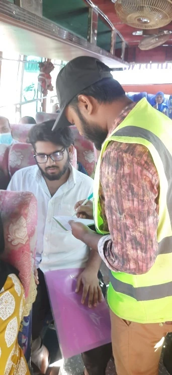
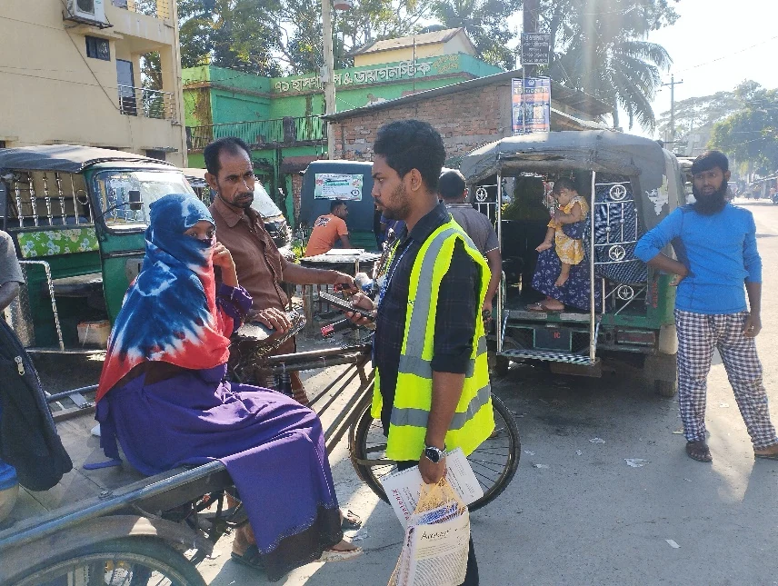
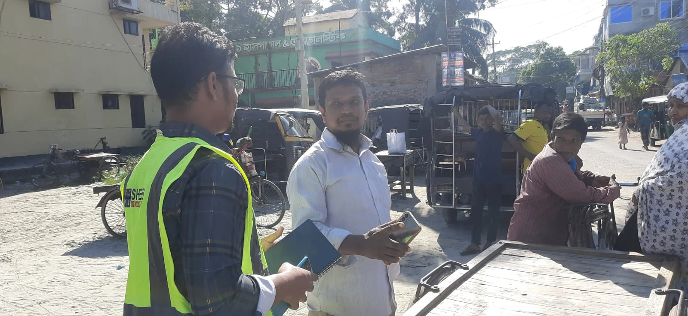

01
Traffic Volume Survey
Mid-block and intersection traffic counts.
A comprehensive transportation baseline prepared to support the Fakirhat Upazila Master Plan. The work integrated traffic counts, pedestrian movement, origin–destination analysis, public transport, parking, household travel, rail, travel-time and road-safety evidence to identify mobility constraints and translate field data into planning priorities.
The transportation work was designed as a master-plan evidence base, combining direct field observation, structured interviews, GIS-based spatial analysis, statistical summaries and stakeholder feedback.
The survey assessed road and railway networks, traffic and pedestrian movement, origin–destination patterns, vehicle occupancy, public transport, parking, household travel, speed and delay, and road safety. The selected survey points represented highways, intersections, bazaars, public transport nodes, administrative centres and local roads across Fakirhat.
The work combined observed movement, interview-based travel behaviour, infrastructure inventories and stakeholder evidence rather than relying on a single traffic-count dataset.
Mid-block and intersection traffic counts.
Pedestrian intensity at critical movement points.
Roadside interviews to understand internal and external trip flows.
Passenger occupancy across private, intermediate and public modes.
Trip purpose, access, transfer and service-quality experience.
Walking behaviour, perceived safety and infrastructure demand.
Route travel time, operating speed and location-specific delay.
Katakhali Railway Station services, facilities and passenger needs.
Parking demand, duration, user behaviour and roadside pressure.
Routes, operators and regional public-transport connectivity.
Mode choice, trip distance, accessibility and road-condition experience.
Stakeholder validation of accident risk, road problems and priority interventions.
The traffic-count component was designed as more than a simple volume inventory. Directional turning movements, vehicle composition, passenger-car-unit intensity, pedestrian peaks and surrounding land-use functions were interpreted together to identify how individual intersections perform within the wider transport system.
Local mobility is overwhelmingly carried by small, flexible and intermediate modes rather than conventional large public transport.
High highway PCU combines with bus stopping, parking, passenger transfer and nearby railway activity. The mismatch between morning vehicle and evening pedestrian peaks creates different management needs across the day.
Main-bazar access, bus counters, Mahendra stands and regional through movement overlap here. The strongest pedestrian flows follow the north–south activity corridor, reinforcing the need for controlled stopping and protected crossings.
Nowapara shows the clearest separation between vehicular and pedestrian intensity: very high PCU but modest pedestrian demand. The high PCU-to-volume relationship indicates substantial larger and heavier vehicle presence, characteristic of a regional corridor.
This is the strongest pedestrian activity node among the highlighted intersections. Market closing, service trips, freight movement, loading/unloading and public transport combine during the afternoon, creating intense pedestrian–vehicle interaction.
The junction has a clear bimodal pattern: morning vehicle demand is tied to government, health and service trips, while evening pedestrian demand reflects homeward and market-oriented travel.
Nowapara is primarily a regional vehicular node, while Duckbangla is a pedestrian-intensive market and mixed-use node.
Different land uses create morning office peaks, midday market peaks and afternoon/evening pedestrian return peaks.
A high PCU relative to raw vehicle count signals a heavier traffic stream and greater operational demand on the junction.
Crossing control, organized loading, parking management and junction operation are more appropriate at many hotspots than corridor-wide widening.
Roadside origin–destination interviews reveal a mobility system that serves daily inter-union travel while simultaneously carrying strong regional movements toward Khulna, Dhaka, Bagerhat, Barishal and other centres. Intermediate modes remain central to local mobility.
A substantial internal movement matrix was captured across Fakirhat's unions.
CNG / auto-rickshaw / auto-van represented the largest surveyed share.
Fakirhat generated the largest union-wise trip share, followed by Lakhpur at 22.1%.
Katakhali Station sits on the Mongla–Benapole rail corridor and provides a potentially important alternative to road travel and freight movement. Survey findings indicate regular and affordable service but also reveal passenger-experience gaps including inadequate seating, limited disability-friendly facilities, absence of CCTV and digital information, and weak security. Improving this node would strengthen multimodal connectivity rather than relying only on road-based solutions.
Roadside and passenger surveys were implemented directly at transport activity points, allowing the analysis to combine spatial data with observed travel behaviour and user experience.



Walking was the dominant first- and last-mile access mode. Users generally valued affordability and availability, while punctuality, cleanliness, seating, terminal conditions and inclusivity remained important service gaps.
Walking supports work, market and home-related travel, but respondents identified accident risk, missing footpaths, poor crossings and inadequate lighting as key concerns.
The household travel survey is one of the most comprehensive components of the transportation study. It combines vehicle ownership, road-condition perceptions, mode-choice determinants, trip purpose, distance, cost, age/gender differences, first- and last-mile travel, union-level variation and service accessibility. The survey was conducted over 39 consecutive days from 25 October to 4 December 2025.
Household-level travel data were derived from the socio-economic survey using a stratified sampling framework. The analysis was designed to explain not only which modes people use, but also how distance, purpose, affordability, road conditions, service access and demographic characteristics influence travel behaviour across the eight unions of Fakirhat Upazila.
Household perceptions translated into union-level planning evidence.
How household travel burden changes with mode and activity.
Age, gender, trip distance and access shape how residents move.
Accessibility and settlement structure produce different travel patterns across Fakirhat.
Household trip patterns were interpreted alongside spatial service-area analysis.
Planning message: household travel behaviour is not uniform across Fakirhat. Short local trips depend heavily on walking and intermediate modes, while longer work and service trips increasingly depend on motorized transport. This supports a combined strategy of better local roads, drainage and lighting, safer walking, affordable intermediate/public transport, and improved access to services in peripheral unions.
Parking and local-access conditions reinforce the household findings: important transport nodes face roadside stopping, short-duration parking, loading and passenger pick-up activity, while peripheral areas experience stronger infrastructure deficiencies.
Survey responses show strong demand for organized parking facilities.
Roadside parking is concentrated around important transport and activity nodes.
The evidence supports formal pick-up/drop-off areas and regulated local transport stands.
The travel-time analysis showed that delay is strongly location-specific. The safety workshop similarly identified concentrated accident and congestion risks around selected highway interfaces, markets, intersections and roadside activity zones.
Route A showed localized slowdowns around Katakhali Bus Stand and other developed sections, while Route B generally operated more smoothly. The evidence supports targeted junction, parking and access management rather than indiscriminate corridor widening.
Overspeeding, weak markings and signage, poor visibility, highway-access level differences, roadside markets and unregulated parking were identified as important risk factors.
The value of the survey lies in translating observed mobility conditions into practical infrastructure, public-transport, accessibility and safety responses for the master plan.
Address deteriorated village/core roads and strengthen strategic inter-union links.
Improve intersection management where traffic, markets and passenger stopping overlap.
Prioritize markets, schools, transport nodes and high-conflict crossing locations.
Reduce carriageway obstruction through designated parking and passenger loading areas.
Strengthen reliability, terminals, seating and inclusive facilities for diverse users.
Use signage, markings, speed management, lighting and targeted redesign at high-risk points.